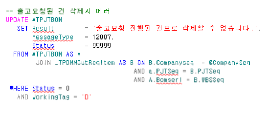

24.12.24 단암 자재출고요청 삭제해야하는 건
--SELECT * FROM _TPJTPROJECT WHERE PJTNO = 'GA210605AS001'
--SELECT * FROM _TPJTBOM WHERE PJTSeq = 15273
SELECT D.ItemNo,C.ItemNo,B.*
FROM _TPJTBOM AS A
JOIN _TPDMMOutReqItem AS B ON B.Companyseq = 1
AND a.PJTSeq = B.PJTSeq
AND A.Bomserl = B.WBSSeq
LEFT OUTER JOIN _TDAITEM AS C ON C.Companyseq = 1
AND A.ITEMSEQ = C.ITEMSEQ
LEFT OUTER JOIN _TDAITEM AS D ON D.Companyseq = 1
AND D.ITEMSEQ = B.ITEMSEQ
WHERE A.PJTSeq = 15273
AND (
(BOMLEVEL = '1.02.1.03' AND C.ITEMNO = '1800010')
OR (BOMLEVEL ='1.02.1.03' AND C.ITEMNO = '1800010')
OR (BOMLEVEL ='1.02.1.05' AND C.ITEMNO = '1700036')
OR (BOMLEVEL ='1.02.1.10' AND C.ITEMNO = '1100556')
OR (BOMLEVEL ='1.02.1.19' AND C.ITEMNO = '1100277')
OR (BOMLEVEL ='1.02.1.20' AND C.ITEMNO = '1100050')
OR (BOMLEVEL ='1.02.1.21' AND C.ITEMNO = '1100996')
OR (BOMLEVEL ='1.02.1.22' AND C.ITEMNO = '1700235')
OR (BOMLEVEL ='1.02.1.25' AND C.ITEMNO = '1300088')
OR (BOMLEVEL ='1.02.1.31' AND C.ITEMNO = '1301043')
OR (BOMLEVEL ='1.02.1.37' AND C.ITEMNO = '1300196')
OR (BOMLEVEL ='1.02.1.45' AND C.ITEMNO = '1201221')
OR (BOMLEVEL ='1.02.1.49' AND C.ITEMNO = '1200718')
OR (BOMLEVEL ='1.02.1.60' AND C.ITEMNO = '1300638')
OR (BOMLEVEL ='1.02.1.62' AND C.ITEMNO = '1300442')
OR (BOMLEVEL ='1.02.1.73' AND C.ITEMNO = '1200015')
OR (BOMLEVEL ='1.02.1.76' AND C.ITEMNO = '1300106')
)
SELECT C.ItemNo,*
FROM _TPDMMOutReqItem AS A
JOIN _TDAITEM AS C ON C.Companyseq = 1
AND a.ITEMSEQ = C.ITEMSEQ
WHERE OutReqSeq = 54085
AND OutReqItemSerl IN(
1
,3
,4
,6
,83
,85
,80
,72
,67
,65
,57
,53
,39
,43
,30
,15
)
SELECT *
FROM _TPDMMOutReqM
WHERE OutReqSeq = 54085
프로젝트재료자원에서 해당 건 들 삭제가 안됨
sp : danam_SPJTResrcBOMAddCheck
=> 자재출고요청 건이 존재
=> 자재출고요청에서 품목을 변경한 건들
